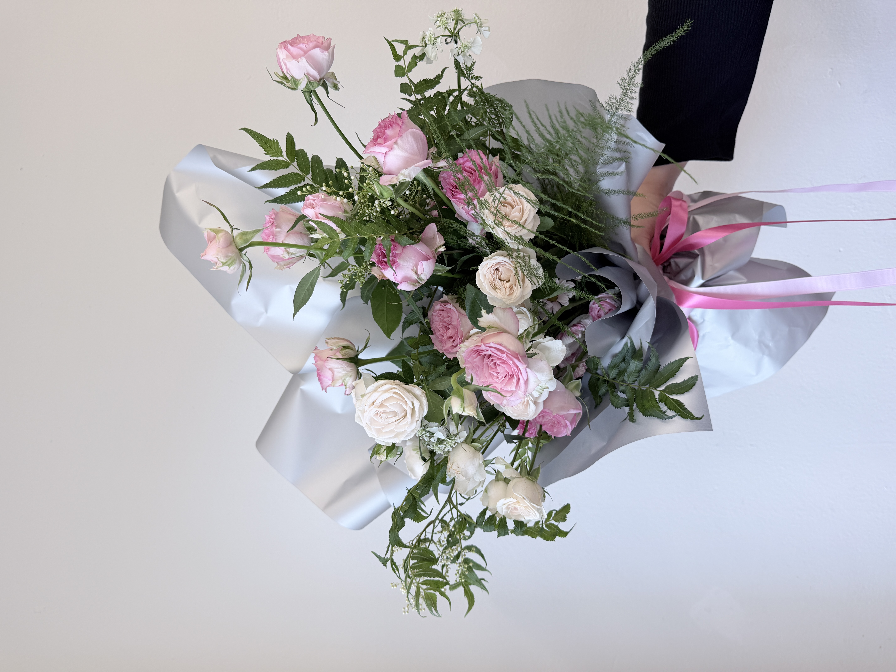
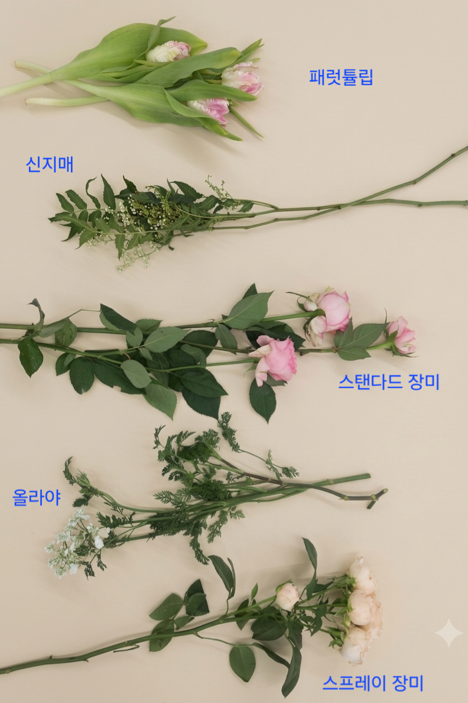
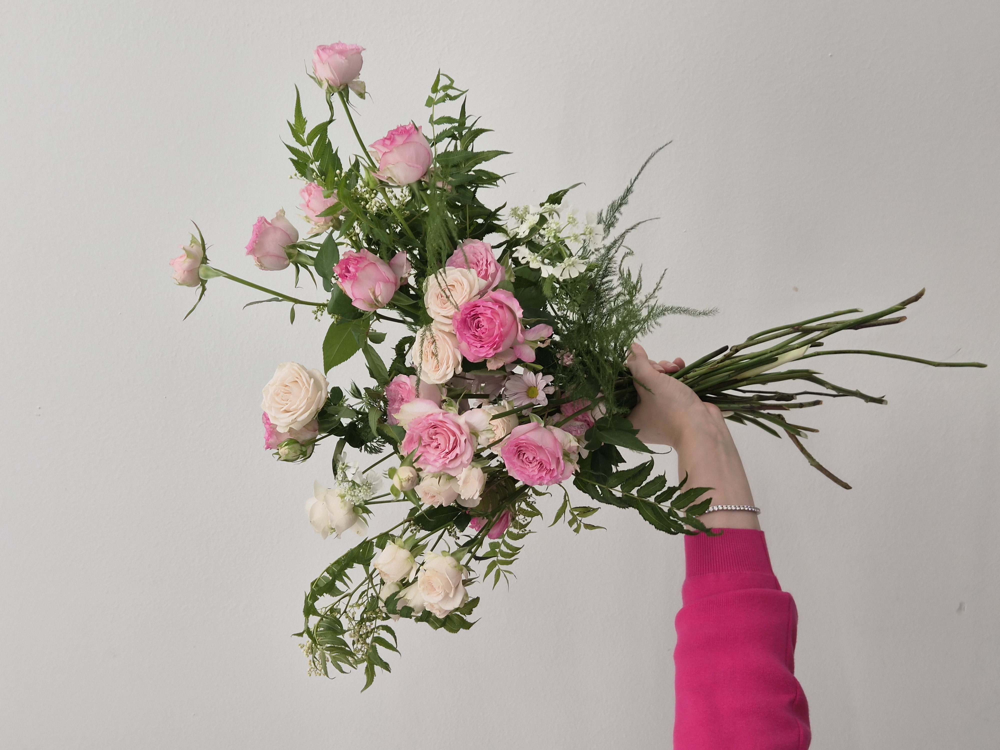
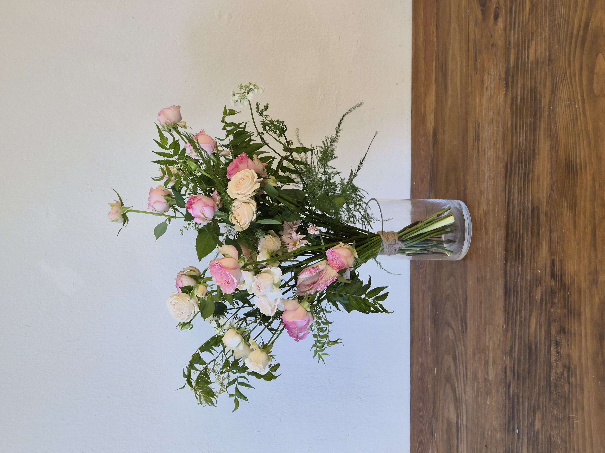
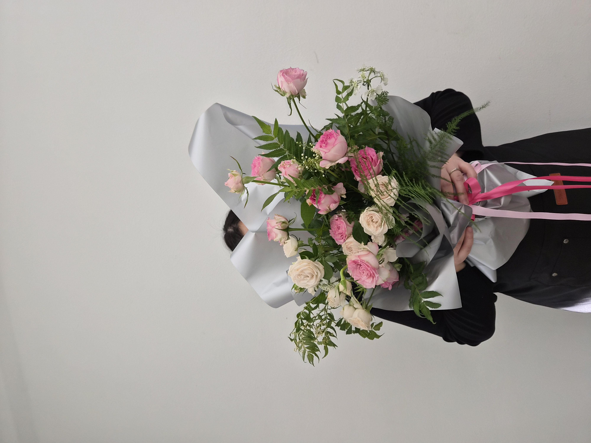

CLASS WORK · HAND-TIED
2026.10.06
U-LINE & V-LINE
HAND-TIED BOUQUET
高さと広がりをつくるUラインとVライン
07 / CLASS WORK
CONCEPT
HEIGHT,
WIDTH
& OPEN SPACE.
핑크와 크림 톤 장미를 중심에 모아 부드러운 매스를 만들고, 신지매와 올라야처럼 길게 뻗는 소재를 바깥으로 확장해 U-line과 V-line의 방향성을 함께 연습한 핸드타이드 부케입니다.
중심은 비교적 안정적으로 유지하되 위쪽에는 높이를, 좌우에는 폭과 흐름을 충분히 남겼습니다. 완전한 대칭 형태를 만드는 것보다 서로 다른 길이와 각도의 선이 중심을 향해 관계를 유지하도록 구성했습니다.
ピンクとクリームのバラを中心に集めてやわらかなマスをつくり、 シンジメやオルラヤのように長く伸びる素材を外側へ広げながら、 UラインとVラインの方向性を同時に練習したハンドタイドブーケです。 中心は比較的安定させつつ、上部には高さを、左右には幅と流れを残し、 完全な左右対称ではなく、異なる長さと角度の線が中心との関係を保つように構成しました。
COLOR PALETTE
色の構成
BLUSH,
CREAM,
FERN GREEN.
블러시 핑크와 로즈 핑크, 크림 아이보리를 중심으로 부드러운 그라데이션을 만들었습니다. 짙고 밝은 여러 톤의 그린이 꽃 사이를 넓게 연결하고, 실버 그레이 포장이 전체 색감을 차분하게 정리하면서 핑크를 더 선명하게 보여 줍니다.
ブラッシュピンク、ローズピンク、クリームアイボリーを中心に やわらかなグラデーションをつくりました。 濃淡の異なるグリーンが花の間を広くつなぎ、 シルバーグレーのラッピングが全体を落ち着かせながらピンクをより鮮明に見せています。
BLUSH PINK
#E7B5BDROSE PINK
#D85C80CREAM IVORY
#E8DED0FERN GREEN
#647451SILVER GREY
#A7A9AEMATERIALS
使用花材
스탠다드 장미와 스프레이 장미로 중심부에 크기와 반복을 만들고, 패럿튤립의 독특한 형태로 표정을 더했습니다. 올라야는 섬세한 꽃과 가는 줄기로 공간을 가볍게 연결하고, 신지매의 긴 가지와 잎은 작품의 폭과 바깥선의 방향을 결정합니다.
スタンダードローズとスプレーバラで中心に大きさと繰り返しをつくり、 パーロット咲きチューリップの特徴的な形で表情を加えました。 オルラヤは繊細な花と細い茎で空間を軽やかにつなぎ、 シンジメの長い枝と葉が作品の幅と外側のラインの方向を決めます。
패럿튤립
パーロット咲きチューリップ
스탠다드 장미
スタンダードローズ
스프레이 장미
スプレーバラ
올라야
オルラヤ
신지매
シンジメ
BLUSH · ROSE
CREAM · FERN GREEN
ブラッシュとローズを中心に、
クリームとグリーンを重ねた配色。

소재를 펼쳐 보면 장미류의 둥근 볼륨과 패럿튤립의 특이한 꽃 형태, 올라야의 가벼운 꽃과 신지매의 길게 이어지는 선이 서로 다른 역할을 담당하고 있음을 한눈에 확인할 수 있습니다.
花材を並べて見ると、バラ類の丸いボリューム、 パーロット咲きチューリップの特徴的な花形、 オルラヤの軽やかな花、シンジメの長く続くラインが それぞれ異なる役割を持つことが分かります。
COMPOSITION
構成とバランス
RISE,
SPREAD,
RETURN.
장미와 스프레이 장미는 중앙과 그 주변에 반복해 중심의 밀도를 만들고, 높은 꽃들은 서로 다른 높이로 배치해 V자 방향의 상승감을 만듭니다.
신지매와 올라야는 좌우로 넓게 퍼지며 U자처럼 바깥 공간을 감싸는 흐름을 만들고, 중심부에서 밖으로 나간 선이 다시 시선을 안쪽으로 되돌려 주도록 구성했습니다.
외곽선은 완전히 대칭으로 맞추지 않고 길이와 방향을 다르게 두어 자연스러운 비대칭을 남겼습니다. 중요한 것은 U와 V를 기하학적으로 정확히 그리는 것이 아니라, 높이와 폭의 관계가 하나의 리듬으로 읽히게 만드는 것이었습니다.
バラとスプレーバラを中央とその周辺に繰り返して密度をつくり、 高い花には高低差をつけてV字方向の上昇感をつくりました。 シンジメとオルラヤは左右へ広がり、U字のように外側の空間を包みながら、 外へ出た視線をもう一度中心へ戻します。 UとVを幾何学的に正確に描くのではなく、 高さと幅の関係が一つのリズムとして読めることを重視しました。

FORM STUDY
HEIGHT,
WIDTH
& FLOW.
손에 들었을 때는 화병에 세워둔 상태보다 바인딩 포인트에서 각 줄기가 어느 방향으로 뻗는지 더 선명하게 보입니다. 중심을 너무 넓게 잡지 않고, 선 소재가 바깥에서 충분히 숨 쉴 수 있도록 결속점 주변의 밀도를 조절하는 과정이 중요했습니다.
手に持った状態では、花瓶に立てたときよりも、 バインディングポイントから各ステムがどの方向へ伸びるのかが明確に見えます。 中心を広げすぎず、ライン素材が外側で十分に呼吸できるよう、 結束点まわりの密度を調整することが重要でした。
FINAL VIEW
完成したかたち

포장 전 상태에서는 중앙의 장미 볼륨과 주변으로 퍼지는 그린, 위로 솟는 꽃의 높이 차이가 가장 직접적으로 보입니다. 좌우의 가지가 완전히 같은 폭으로 퍼지지는 않지만, 서로 다른 선이 중심을 감싸며 작품 전체에 열린 실루엣을 만듭니다.
ラッピング前では、中央のバラのボリューム、周囲へ広がるグリーン、 上へ伸びる花の高低差が最も直接的に見えます。 左右の枝は同じ幅ではありませんが、異なるラインが中心を包み、 全体に開いたシルエットをつくっています。
WRAPPED SCALE
SOFT MASS,
WIDE LINE
& SILVER.
실버 그레이 포장은 넓게 퍼진 그린과 핑크 장미를 차분하게 받쳐 주고, 핫핑크 리본은 중앙 아래쪽에 작은 색의 축을 만들어 줍니다. 실제로 들었을 때 작품의 폭과 볼륨이 더 분명하게 느껴져, 포장 후에도 외곽선이 눌리지 않도록 충분히 여유를 남겼습니다.
シルバーグレーのラッピングは広がるグリーンとピンクのバラを落ち着いて支え、 鮮やかなピンクのリボンが下部に小さな色の軸をつくります。 実際に持つと作品の幅とボリュームがより明確に感じられるため、 ラッピング後も外側のラインがつぶれないよう余裕を残しました。

REFLECTION
制作を振り返って
WIDTH,
HEIGHT,
CONTROL.
중심의 볼륨을 유지하면서 폭과 높이를 동시에 크게 확장해 보는 작업이라, 꽃을 채우는 것보다 바깥선의 방향과 빈 공간을 조절하는 일이 더 중요했습니다.
선이 많아질수록 서로 경쟁하기 쉬워 어느 가지를 살리고 어느 부분을 비울지 선택해야 했고, U와 V의 방향이 각각 보이면서도 한 작품 안에서 분리되어 보이지 않도록 중심과 외곽 사이의 반복을 의식하게 되었습니다.
中心のボリュームを保ちながら幅と高さを同時に大きく広げる制作だったため、 花を埋めることよりも外側のラインの方向と余白を調整することが重要でした。 線が増えるほど互いに競合しやすいため、どの枝を生かし、どこを空けるかを選び、 UとVの方向が一つの作品としてつながるよう中心と外側の反復を意識しました。
중심의 밀도를 조금 더 가볍게 조절하고, 외곽의 긴 선을 더 선택적으로 사용해 U와 V의 방향을 단순하고 선명하게 보여 주기